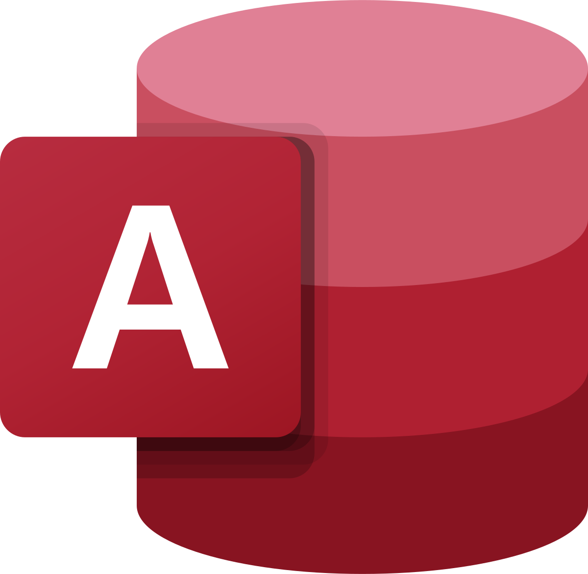
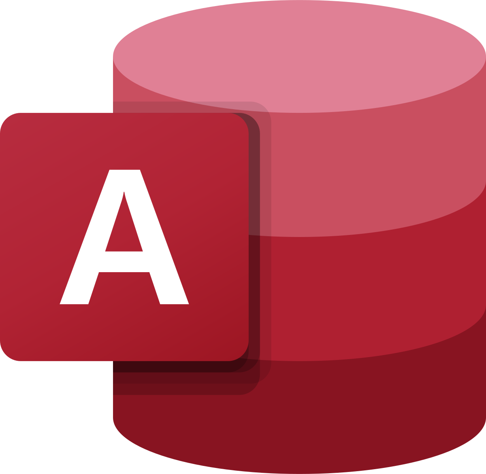
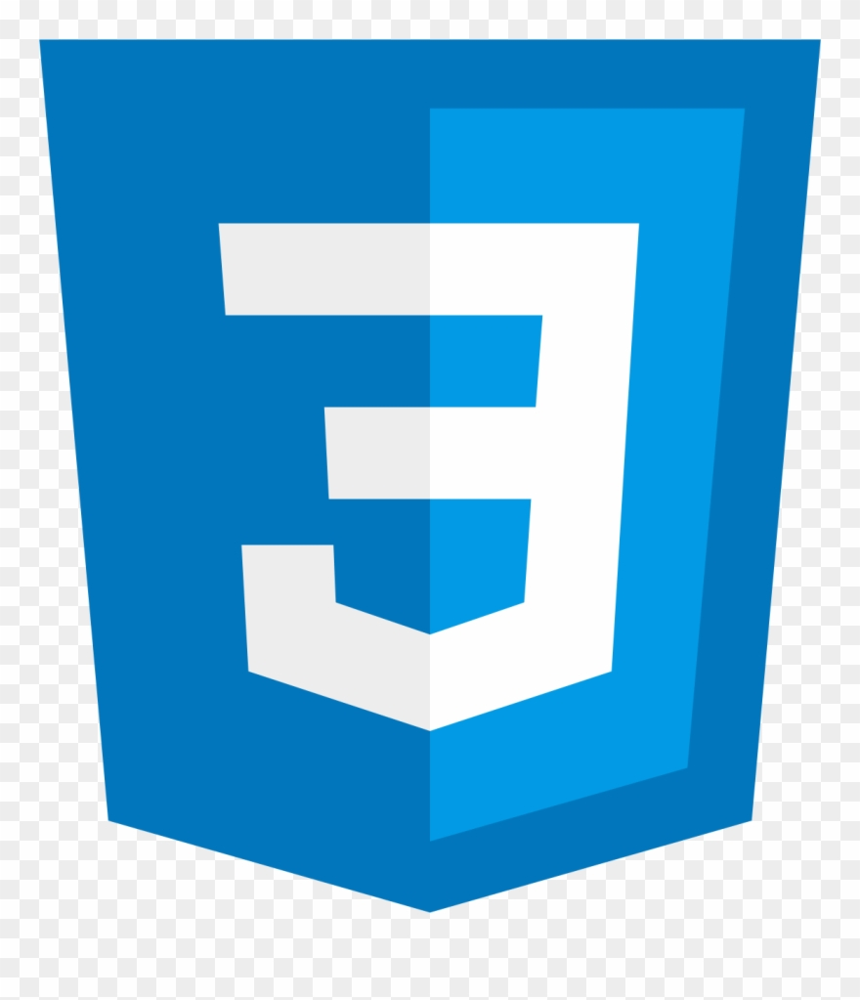
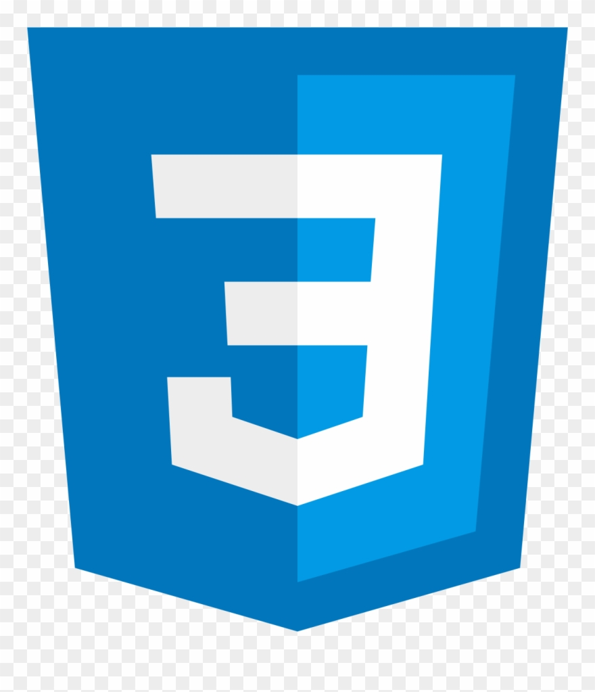

Skills
Creative Software


I started graphic design as a hobby in middle school, and have been in love with it ever since. It started out with GIMP, and eventually moved over to Photoshop the more I got involved. From there, I learned more of the Creative Suite such as Lightroom (which stemmed from my interest in photography), Illustrator, Premiere Pro, and After Effects. I've used all of the previously listed software in a professional environment before, and would consider myself highly proficient in them.
Last summer, I got into compositing by combining my interests in computer graphics and video editing. I started out modeling in Cinema 4D, and have since worked more on soft- and hard-body dynamics, fluids, and pyrotechnics. I've composited renders from Cinema 4D (Using the Physical Render Engine and Octane), Maya (using Arnold), and Houdini (using Mantra) into videos I shot on my own camera by using After Effects as well as Nuke. The node-based approaches of Houdini and Nuke definitely took some time to get used to, but the more I use it, the more I like it.
Productivity Software


 


I've been using Microsoft Office for as long as I can remember, so there's not too much worth noting (at least in terms of Word and PowerPoint). I've been using Excel for a while as well, but recently became more proficient when I learned VBA. I've also used VBA in the past to connect to Access databases to retrieve and parse information. Over the last summer at FreshSpoke, I learned Visio to develop flowcharts to aid me in planning out a new user experience for two mobile apps.
Programming


 



I wrote my first line of code in middle school when I took an online course in web development. Since then, I've learned more languages, and with every language I learn, the further my interest grows. I went on to learn the concepts of object-oriented programming in Java, and then more recently began working on some projects in C and C++ due to wanting to know a lower-level language. I've also learned Python over the years, and have used it in combination with MySQL, and am hoping to use it with TensorFlow soon enough. In terms of web depelopment, I've used HTML/CSS, some JavaScript, and am hoping to learn React soon.
Technologies


I use Git for version control for personal projects, some of which can be viewed on my GitHub. I've used MySQL with Python to query databases, and have used Azure to create Linux and Windows virtual machines for the purpose of hosting servers. Admittedly, I only have experience with these technologies from my own personal projects, but am keen to learn more of all of what these services have to offer.
Eager to Learn


Next on my list for what I'd like to learn includes (but isn't limited to) React, Rust, and TensorFlow. I'm interested in Rust because of its approach to memory management, I'm interested in React because I would like to be able to use its powerful toolset for front-end development, and I would like to learn TensorFlow because of my rapidly growing interest in artificial intelligence.